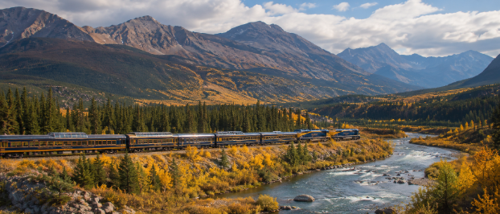
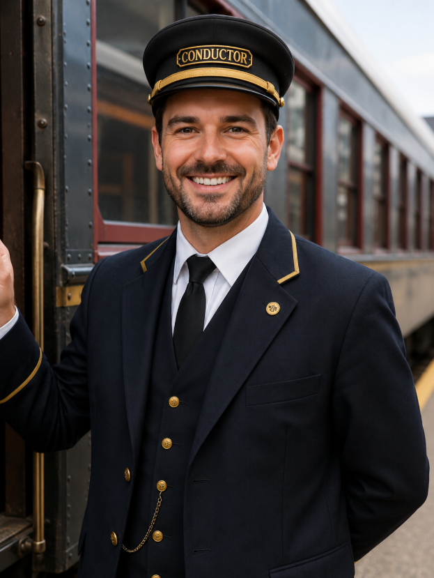

Trains have played an important role in transportation for more than two centuries. Early trains were powered by steam engines, which became widely used during the 1800s to move passengers and cargo across long distances. As technology improved, steam locomotives were gradually replaced by diesel and electric trains, making rail travel faster, quieter, and more reliable. Today, trains are used all over the world and remain one of the most efficient ways to move large numbers of people and heavy loads.
A train usually consists of a locomotive connected to several passenger or freight cars. The locomotive provides the power needed to pull or push the train along steel tracks. Passenger trains are designed to carry people between cities and towns, while freight trains transport materials such as food, automobiles, fuel, lumber, and other goods. Conductors also play an important role by helping manage the train, assisting passengers, checking tickets, communicating with the crew, and helping make sure the train operates safely.
Modern trains continue to improve with new technology. High-speed trains can travel hundreds of miles per hour, allowing passengers to move quickly between major cities. Electric trains can also produce fewer emissions than many cars or airplanes, making rail transportation an important option for reducing pollution and traffic. Whether traveling through busy cities, open countryside, or mountain valleys, trains continue to connect people and communities around the world.